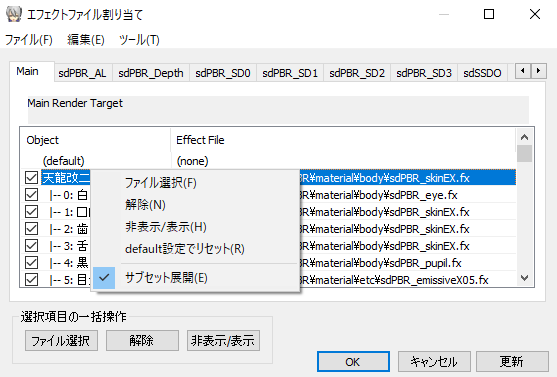
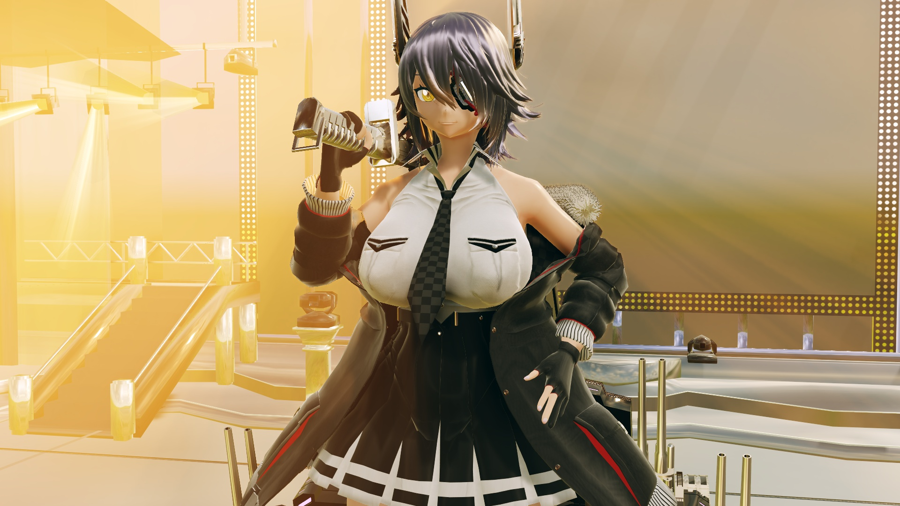

I will walk you through how to use sdPBR step by step. Before you continue, make sure you have MMD with MikuMikuEffect (MME) installed, and PC with reasonably powerful GPU!
First, open MMD as usual and load a model. For this tutorial, I'll be using Tenryuu Kai Ni by (｀・ω・).
You can download her from NicoNico Solid!
Of course, feel free to replace her with your favorite model.
Next, we will load sdPBR. Drag and drop sdPBR.pmx included in the distribution archive to MMD.
It might take a while to load. If it takes too long to load, it might be better to not use sdPBR (you'll see why soon).
The background is black now. It doesn't look that different for now.
We'll load sdPBRGBuffer.x. This is called GBuffer, and it handles passing sdPBR material information to additional lights like spotlights, which I'll explain later. It doesn't affect the view on its own, but you should set it the highest in the draw order anyway from accessories edit. (if it's at the bottom, posteffects will not take spotlights into account.)
I wanted to include GBuffer to sdPBR.pmx, but it didn't work well on GeForce so I had to split them apart.
Next, we'll apply sdPBR effect to Tenryu-chan.
Open "Map Effect File" dialog from the "MMEffect" menu in the top right corner of MMD, then apply "sdPBR_skinEx.fx" in material\body folder to "天龍改二.pmx".
That looks a bit scary. This is because if lights aren't illuminating, that part becomes completely dark.
Ambient light illuminates areas that direct light doesn't reach. In order to supply ambient light and reflection maps, sdPBR uses something called skybox.
Now load skybox.x inside skybox folder.
And although easy to forget, you should adjust the draw order so that skybox.x appears after the model. It shouldn't be a problem by default, because we put sdPBRGBuffer.x previously, but if it looks weird, please keep it in mind. Depending on the hardware, it might not be necessary, but without doing this, at least on GeForce, the shader might not correctly detect the skybox content.
As long as it displays after the model it's good, so you should put skybox.x towards the back.
side note: skybox.x in skybox folder won't draw anything to the screen, so it's fine to put it at the back for now. However, skyboxXX.x inside skybox2, 3, skyboxScreen folders can draw fog, so you should put those before the tone mapper, which I will explain later.
Continue by loading skyboxDisplay.pmx inside the skybox folder as well. It comes with an effect to test skybox content. This is just to show "it comes with this", and it won't cause any trouble if you don't use it. Well, there's no harm in using it, so let's load it anyway.
After that, load sdToneMapper.x inside posteffect folder. You don't necessarily have to use sdToneMapper, but if you do, colors will look more vivid. There are other tone mappers in the same folder so you can change depending on your mood.
So, the scary appearance should be reduced now. Like this:
the order doesn't matter, but this is the basic usage of sdPBR.
If you are well-versed in MME, you might think "Why don't you just put tone mapper inside sdPBR.pmx?" Tone mappers will compress images with brightness higher than 1 (High Dynamic Range) to brightness lower than 1 (Standard Dynamic Range) that can be displayed with monitors. If you include that, higher brightness will be rounded. So put sdToneMapper.x after most posteffects that comes with sdPBR, and other HDR posteffects like AutoLuminous and msPowerDiffusion. In order to do that, I intentionally made tone mapper as separate posteffect. That's thorough, isn't it?
That's not enough, so let's load background models. Load "UserFile\Accessory\stage01.x" included in MMD. Then, hide "coordinate axis" and "ground shadow" and enable "camera lighting tracking" from "view" menu.
Now, we'll apply sdPBR effect to the background as well. A metallic look would be cool! Let's apply material\etc\sdPBR_metal_mid.fx. There are more materials included, so although it'll take some time to load, it's good to find materials that you like. Let's apply the same material to Tenryu-chan's equipment.
Let's add a spotlight on the stage. Drop SpotLightVol.pmx inside lighting\SpotLight folder in distribution archive.
By default, there's no difference because the brightness is at zero. Set V morph (brightness) in the top left of the facial manipulation panel in SpotLightVol.pmx to 1.
It looks smoky now. SpotLightVol will make the illuminated area appear smoky, which is called "volumetric light". SpotLights without Vol in their names are not volumetric.
If the volumetric effect is too heavy, use normal SpotLight without Vol. The lights that will illuminate ground and Tenryu-chan are the same, so it shouldn't be a problem.
How about changing light position? We'll move it to around Y=30. Then, in the top left list of facial morphs, set ConeAngle morph to 0.85, and rotate by -90 degrees in X axis to make spotlight cone. I want you to keep it in mind: spotlights won't cast shadows if ConeAngle is less than 0.5. Also, you should narrow the cone as much as possible. If you widen too much, the shadows will become rough.
And let's change the color of the light. If you increase S (saturation) in the top left list of facial morphs, the light will turn red. From that state, adjust H (hue) morph. The hue of the light will change.
In sdPBR, colors are specified using three elements: Hue, Saturation, Brightness, which is called HSV color representation. You might be more used to RGB, but when actually making videos, there are many situations where you want to "make it black and white while keeping the brightness so lower the saturation", or "change only the brightness without changing the hue so change only the brightness", or "make it rainbow-colored so change the hue". In such cases, with RGB color representation, you have to adjust all three RGB values, which makes it complicated. Especially, can you immediately figure out how to animate a rainbow color change using RGB? That's why, for colors that need to change over time, I decided that HSV color representation is more practical, and implemented it this way.
Now, let me also explain what to do if you want to make it brighter than V morph 1.0. If you adjust the Distancex100 morph in the top right list, it will become much brighter. Use the Distancex100 morph for rough scaling, and fine-tune the brightness with the V morph. If you feel the edge of the spotlight cone is too sharp and ruins the mood, set the ConeDullness morph in the top right list to about 0.5 to make the cone edge smoother.
If you feel that where the light source is located looks too bright and it's too obvious that "the light is coming from here!", try raising the LightRadius morph in the top right to about 0.2. The Light Radius morph allows you to specify the virtual size of the light source. If the Light Radius is 0, only the exact position of the light source will be prominently bright, but if you increase the Light Radius (it won't be displayed on the screen unless you also increase the DisplayMark morph), the brightness will be constant up to the surface of the light source, and fading will be calculated based on the distance from the surface. By the way, when the LightRadius morph is 1, the radius is calculated as 100 MMD units (equivalent to 8 meters). It's quite large, but if you want it even bigger, just enter the value directly.
* Does the LightRadius morph really create a spherical light source? Actually, it doesn't. It just allows you to specify a radius where there is no fading. Truly large light sources can be created with rectangular lights (RectLight).
Doesn't it already look nice and soft with the light source? From here, let's explain how to select the texture for each part of Tenryu-chan.
Currently, with the current settings, Tenryu-chan is being rendered with just one shader for skin, sdPBR_skin.fx, applied to her whole body. Of course, if you don't assign clothing materials to clothes and hair materials to hair, it won't look right, so let's fix that. Open "Effect Mapping" from the MMEffect menu.
If you right-click "天龍改二.pmx" and click the "Subset-Extract", you can assign different effect files to each material. There are sometimes models with over 100 materials, so it might feel like a hassle if you're not used to it, but once you remember which file is for which material, you can proceed quickly and enjoy it as if you're coloring!
There is also a list of included materials here (jumps to github page). I update it from time to time when I am out of ideas, so the updates might be a bit slow... but I think it will be useful.

I turned off the spotlight for now, and assigned all of the materials while checking which material name corresponds to which.
If you use the "Save by Model" button in the effect mapping dialog, you can save the list of assigned effect files and reuse them between different pmm files, so if you put effort into assigning them, it's efficient to save it.
Once you've finished assigning materials, try moving the MMD lights and camera, and you'll see that the overall look has changed significantly.
You should absolutely try it with your favorite models and backgrounds!
The look changes a lot depending on the placement and direction of the light sources. I think it's fun to try various things.

Are you planning to wait until you become a master after decades of training before posting to NicoNico? That's a long story.
Fun fact, it takes a bit to load shaders when changing materials, so you can make an effect cache that has all the materials you are going to use. That way, you only have to wait for the pmm file and MME to reload.
{kind=link}
{kind=link}
{kind=link}
{kind=link}
{kind=link}
{kind=link}
{kind=link}
{kind=link}
{kind=link}
{kind=link}
{kind=link}